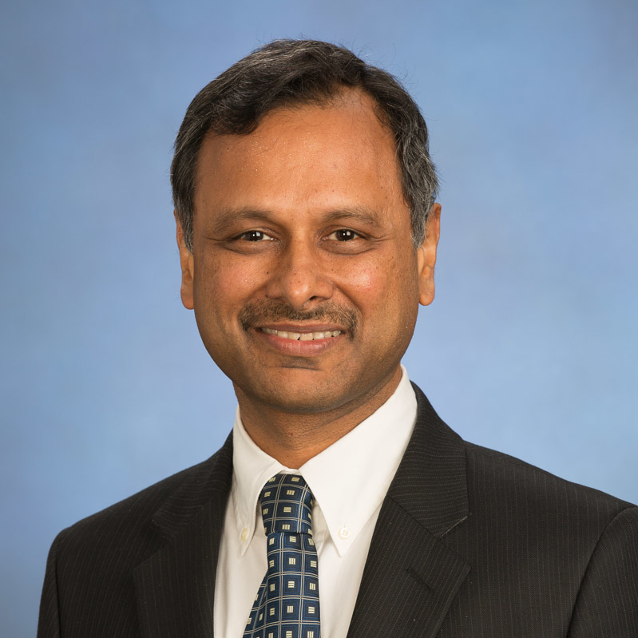
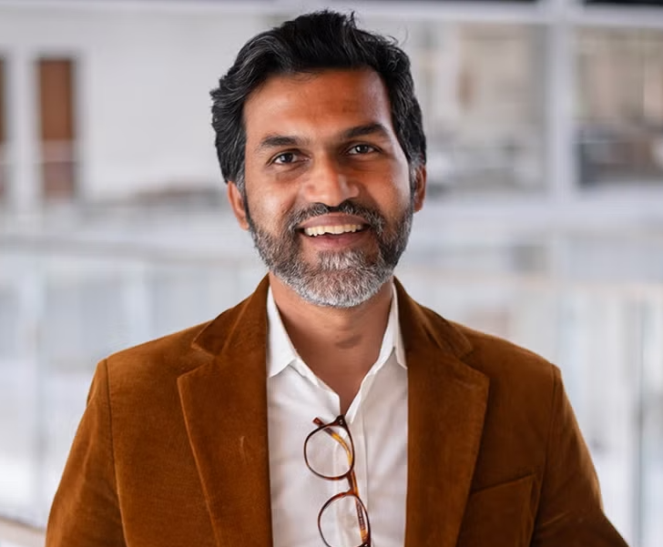

ICDCN 2027 features distinguished researchers and practitioners from across the world as keynote speakers.

Valerie King
ACM Fellow
Professor, University of Victoria, Canada
TBA
Valerie King is Professor in the Department of Computer Science at the Uni- versity of Victoria. She received her PhD in computer science in 1988 from the University of California, Berkeley under the supervision of Richard Karp, a JD degree from the UC Berkeley School of Law in 1983 and an AB degree from Princeton University in mathe- matics. She held postdoctoral fellowships at University of Toronto under Faith Ellen and at Princeton under Andrew CC Yao. She held visiting professor positions at Hebrew Uni- versity, University of Copenhagen, University of Toronto, UC Berkeley, and Ecole Normale Superieur in Paris. Her industrial research experience includes Microsoft Research (Sili- con Valley Center), Compaq and HP Systems Research Center in Palo Alto, and NECI in Princeton. In addition she was a member of the Institute for Advanced Study in Princeton and the Simons Institute. She served on the editorial board of the Journal of Discrete Algorithms, organized many workshops, and served on numerous technical committees and panels, including the Independent Panel on Internet Voting for Elections BC and PC Chair of STOC 2017. She is the author of over 85 refereed publications. In 2014, she received the distinction ACM Fellow for her work on randomized algorithms, especially dynamic graph algorithms and Byzantine fault tolerant distributed computing.

Manish Gupta
ACM Fellow
Senior Director, Google DeepMind
The Transformative Power of AI and Open Challenges
This session will explore recent advances in artificial intelligence, with a focus on deep learning, foundation models, and AI agents. It will highlight the remarkable progress of AI in understanding, prediction, and creativity, while examining key challenges in safety, fairness, transparency, and computational efficiency. Emphasizing the importance of Inclusive AI, the session will present advances in enhancing the multilingual capabilities and cultural understanding of foundation models such as Gemini, improving the efficiency of large language models, and leveraging satellite imagery to transform agriculture and improve the livelihoods of farmers in the Global South. It will also explore how agentic frameworks can further enhance AI capabilities. Through these examples, the session will showcase the potential of AI to address pressing global challenges and highlight exciting open research questions that lie ahead.
Dr. Manish Gupta is a Senior Director at Google DeepMind, leading teams conducting AI research across India, Japan and Singapore. Previously, Manish has led VideoKen, a video technology startup, and the research centers for Xerox and IBM in India. As a Senior Manager at the IBM T.J. Watson Research Center in Yorktown Heights, New York, Manish led the team developing system software for the Blue Gene/L supercomputer. IBM was awarded a National Medal of Technology and Innovation for Blue Gene by the then US President Barack Obama in 2009. Manish holds a Ph.D. in Computer Science from the University of Illinois at Urbana Champaign. He has co-authored about 75 papers, with over 8,000 citations in Google Scholar and h-index of 50, and has been granted 19 US patents. While at IBM, Manish received two Outstanding Technical Achievement Awards, an Outstanding Innovation Award and the Lou Gerstner Team Award for Client Excellence. Manish is a Fellow of ACM and the Indian National Academy of Engineering, and a recipient of a Distinguished Alumnus Award from IIT Delhi.

Kaushik Chowdhury
Ernest Cockrell, Jr. Memorial Chair in Engineering
Professor, University of Texas at Austin
AI-Native Receivers: Testing, Lifelong Adaptation, and Practical Deployment in Cellular Networks
AI-native wireless receivers have shown impressive bit error rate (BER) gains over classical designs. Yet real-world adoption remains slow due to concerns about failure risk and operational uncertainty once models leave the lab. This talk presents an end-to-end view of how AI-native receivers can be made deployable around three practical pillars. First, we address testing before deployment using an AI-guided test generation framework that benchmarks pre-trained AI-native receivers without requiring exhaustive enumeration of channel and environment conditions. Second, we tackle continuous adaptation after deployment through a measurement–recovery framework that detects distribution shifts from pilots (e.g., changes in channel profile, speed, delay spread) and triggers finite retraining spurts only when needed. Our approach decides whether retraining is warranted even as deployment conditions drift. Third, we explore coexistence with classical receivers by switching between AI-native and classical decoding with a viewpoint of minimizing energy consumption when specific types of traffic are detected in the network. Together, these three components outline a deployable blueprint for AI-native receivers that are testable before launch, self-correcting in the field, and interoperable with classical stacks.
Prof. Kaushik Chowdhury holds the Ernest Cockrell, Jr., Memorial Chair in the Electrical and Computer Engineering department at The University of Texas at Austin, USA. His research spans applied machine learning for wireless systems, including deep learning for spectrum sensing and sharing, RF cybersecurity, multimodal sensor fusion and digital twins. He is a Fellow of the IEEE. His work has been recognized with major honors, including being a finalist for the 2023 US Blavatnik National Awards for Young Scientists, the U.S. Presidential Early Career Award for Scientists and Engineers (PECASE), the DARPA Young Faculty Award, the ONR Director of Research Early Career Award, and the NSF CAREER Award.